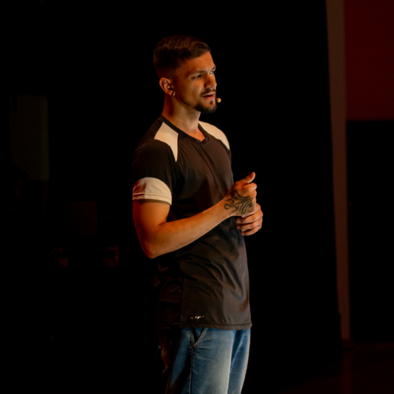
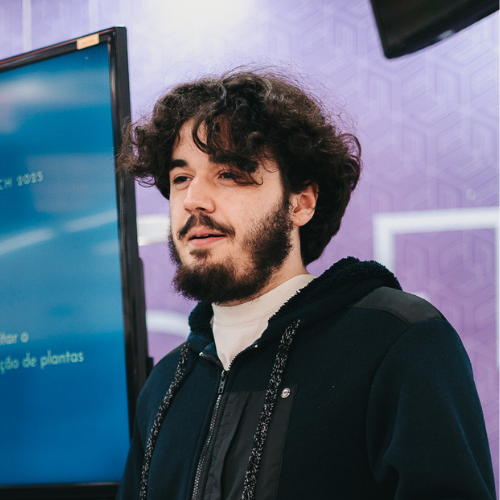

Sobre o Projeto
Este projeto foi desenvolvido com o intuito de analisar os ataques cibernéticos mais relevantes ocorridos entre 2015 e 2024, explorando dados de países, setores, tipos de ataques, prejuízos financeiros e usuários afetados.
Equipe
João Paulo
Cientista de Dados

Matheus de Alencar
Hacker Ético

Tales Henrique
Arquiteto de SoftwareDataset Utilizado
Global Cybersecurity Threats 2015-2024. Contém informações sobre tipos de ataque, setores afetados, prejuízos financeiros, número de usuários impactados, estratégias de defesa e tempo de resolução de incidentes.